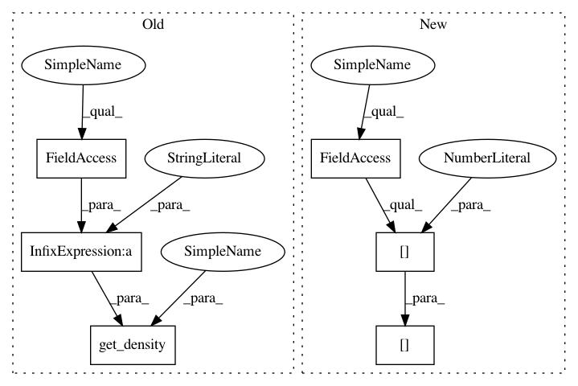

4432f281830cd4ec9714d8d6a55be95ecc125a2e,src/spn/structure/leaves/parametric/Symbolic.py,,gaussian_to_sympy,#Any#Any#Any#,20
Before Change
def gaussian_to_sympy(node, input_vars=None, log=False):
result = get_density(st.Normal("Node%s" % node.id, node.mean, node.stdev), node, input_vars)
if log:
result = sp.log(result)
return result
After Change
def gaussian_to_sympy(node, input_vars=None, log=False):
x = input_vars[node.scope[0]]
result = (1.0 / (node.stdev * np.sqrt(2 * np.pi))) * exp(- Pow(x - node.mean, 2) / (2.0 * node.stdev * node.stdev))
//result = get_density(st.Normal("Node%s" % node.id, node.mean, node.stdev), node, input_vars)
if log:
result = sp.log(result)
In pattern: SUPERPATTERN
Frequency: 3
Non-data size: 6
Instances
Project Name: SPFlow/SPFlow
Commit Name: 4432f281830cd4ec9714d8d6a55be95ecc125a2e
Time: 2020-02-06
Author: molina@cs.tu-darmstadt.de
File Name: src/spn/structure/leaves/parametric/Symbolic.py
Class Name:
Method Name: gaussian_to_sympy
Project Name: SPFlow/SPFlow
Commit Name: 11793270f05ef3f93b6a897d23fa66e73c34882c
Time: 2020-11-20
Author: molina@cs.tu-darmstadt.de
File Name: src/spn/structure/leaves/parametric/Symbolic.py
Class Name:
Method Name: categorical_to_sympy
Project Name: SPFlow/SPFlow
Commit Name: 11793270f05ef3f93b6a897d23fa66e73c34882c
Time: 2020-11-20
Author: molina@cs.tu-darmstadt.de
File Name: src/spn/structure/leaves/parametric/Symbolic.py
Class Name:
Method Name: bernoulli_to_sympy